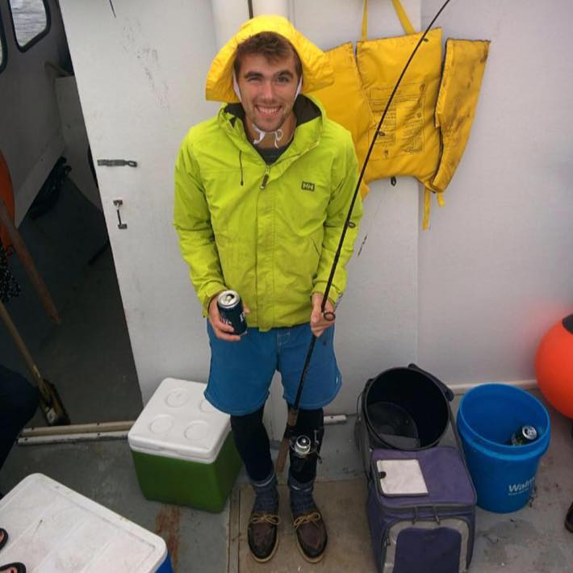

Albert Lockett
Thank you for visiting my site. I live in Halifax.

Links
Projects
- node-proxy - nice proxy you can run on a gateway machine in virtual box so all your virtual machine traffic will flow through your company's proxy
- atlantic-chip - screen scraper for popular Atlantic Canadian race timing website atlanticchip.ca. Written using Apache Spark (work in progress)
- yarn-fft - Fast Fourier Transform implementation written for Hadoop Yarn (work in progress)
Contact